PARK Yuyeon
Ewhayeodae-gil 52 · Seoul, Seodaemun-gu, Science-Building B · +82-10-2527-5997 ·
puyoun@gmail.com
Statistician, Data Scientist
Statistician, Data Scientist
It was a team project, and I was a leader. We analyzed weather data using the deep learning methodologies LSTM and CNN-LSTM, as well as ARIMA. Also, I constructed a model to reduce MSE and accurately predict a monthly weather data result. We used logistic variable selection before replacing outliers and finding a correlation between variables. Overall, We discovered CNN-LSTM's performance was superior to the other methodologies.
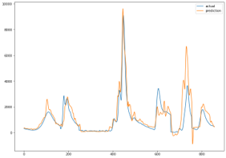It was a team project. We created an algorithm to find a solution to the N-queens problem using a local search and optimization, Simulated Annealing, Hill Climbing, and Local Beam Search. We compared their performances in accuracy and running time. I found that Simulated Annealing and Local Beam search were superior in performance, but took a long time to calculate solutions via python.
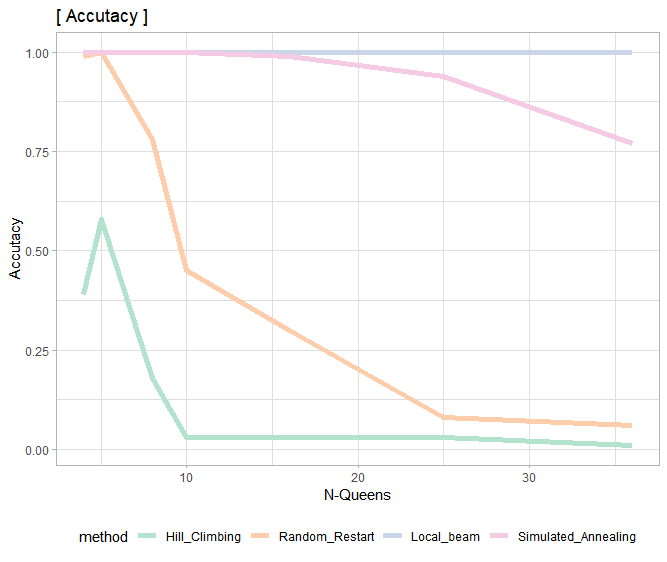It was a team project, and I was a leader. Differently from traditional GLM based models, we used the deep learning methodologies LSTM, CNN-LSTM, and GRU to predict time series data. I compared their performance and suggested future areas of research in the prediction of apartment pricing data. We made several important conclusions from the project, namely that 1) LSTM and GRU have similar performances in time series data, 2) confirmed the results of a number of previous papers in this topic area, and 3) identified the most important variables for predicting results with apartment pricing data.
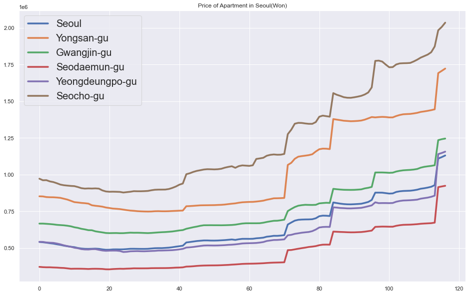Use NLP method to classify and categorize Korean languages, especially customer survey data.
Research about GDP and ratio of education in Humanities(Liberal Arts). Use individual internet usage ratio as a instrumental variable. As a result, induce 3 points: 1) in relation between GDP and individual internet usage, country(government) can make ODA for developing countries to set the internet network. 2) ratio of education in Humanities is not higher than expected, so it could be used as basis in widen Humanities program.
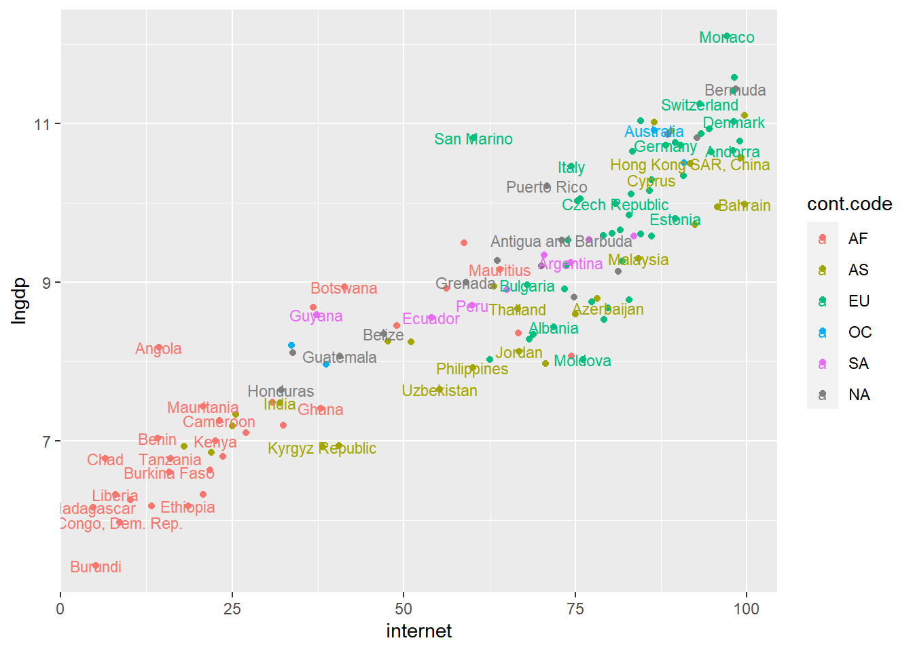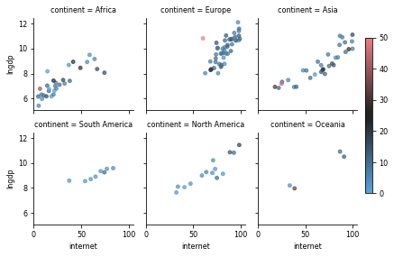Reasearch about how internet usage ratio affects poverty over 256+ countries. Use Linear, Logistic, Probit model to analyze. Additionally use ratio of post secondary education, GNI, and female first marriage age as variables. As a result, induce 2 points: 1) as pandemic arise, it could be explain relationship between educational level and internet distribution rate. 2) follow it, it also could be a basis of making policies.
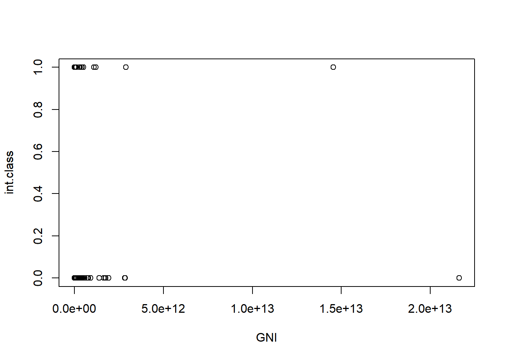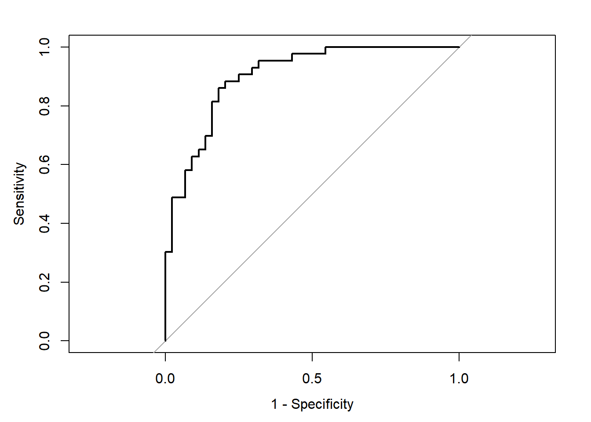Predict a monthly sunlight. Use ARIMA method to predict and it become a basis of Big Contest above. In this analysis, from EDA to conclusion, do many tests to proof justification of model.
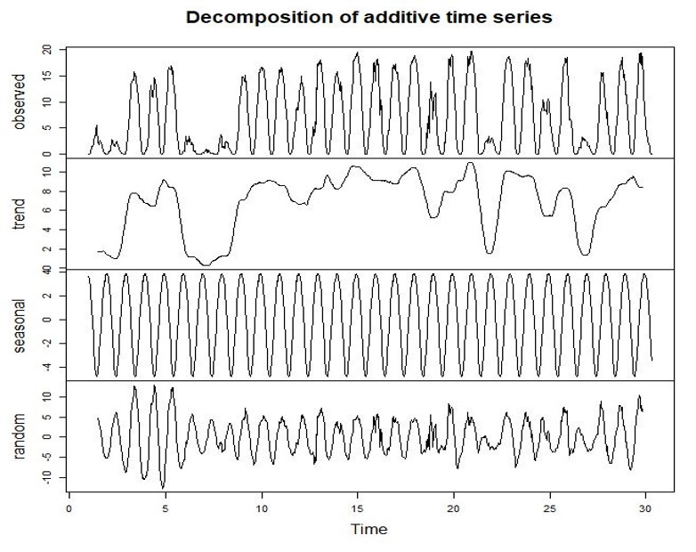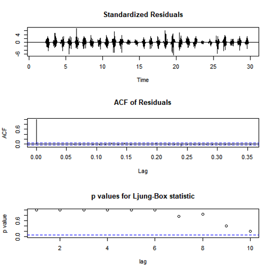Reasearch about correlation between the internet distribution and educational levels. It is the beginning of above 2 projects. Use internet usage ratio per 200+ countries and focus post secondary education. Use Linear Regression Analysis in here.
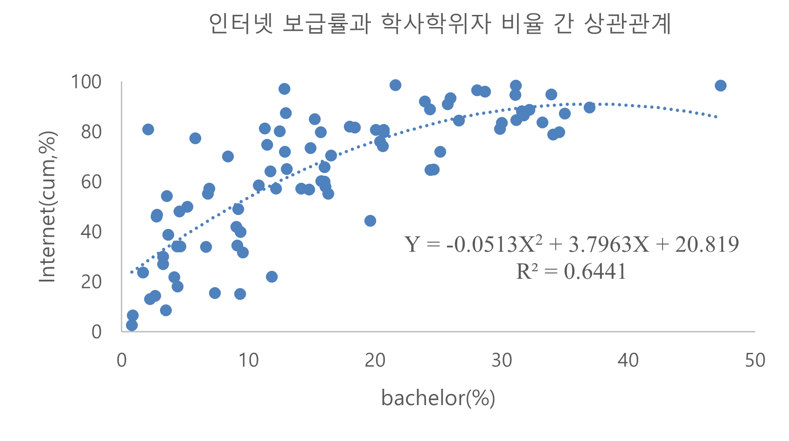Survey among students in Ewha about their cell-phone payment and where the source is. 118+ students apply it and analyze its population mean, variance, ratio. According to the result, 79% of students do not pay for it themselves and diverse in using payment agency with similar ratio.
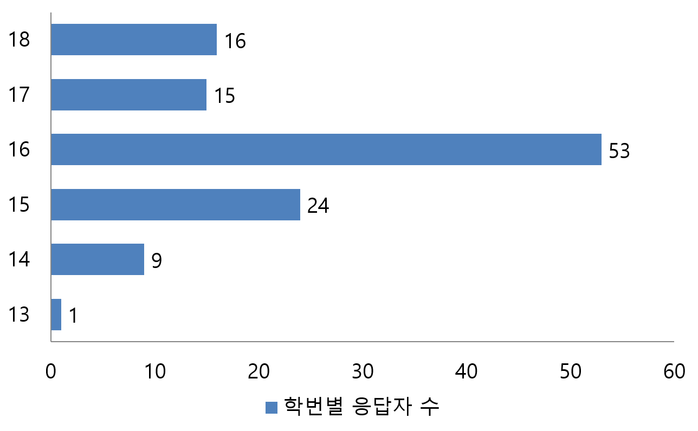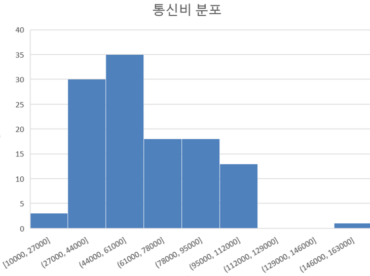Economic Data Analysis(present)
Data Mining(present)
Selected Topics in Data Analysis I : FDA(Functional Data Analysis)(present)
Advanced Topics in Contemporary Statistics II : Generative Model and Deep Learning(present)
Topics in Statistical Computing I : Computational Statistics, Algorithm
Generalized Linear Model
Bayesian Statistics
Probability Theory I
Regression Analysis
Theoretical Statistics I
Seminar in Statistics II
Categorical Data Analysis
Data Mining
Analysis of Life Science Data
Introduction to Time Series Analysis
Programming for Statistics : VBA, Python
Computational Statistics and Lab : SAS
Mathematical Statistics I,II
Sampling Survey Method
Regression Analysis
Basic Probability Theory
Basic Statistics
GPA: -
GPA: 3.45/4.3